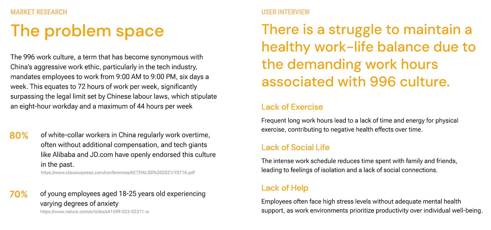
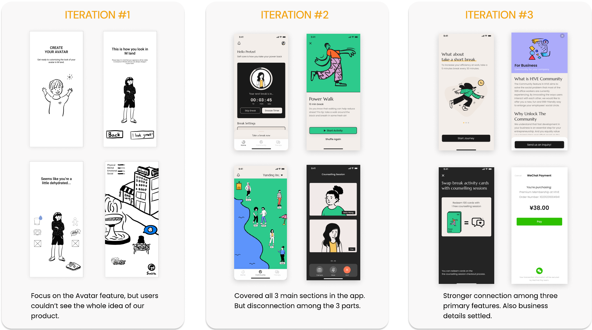
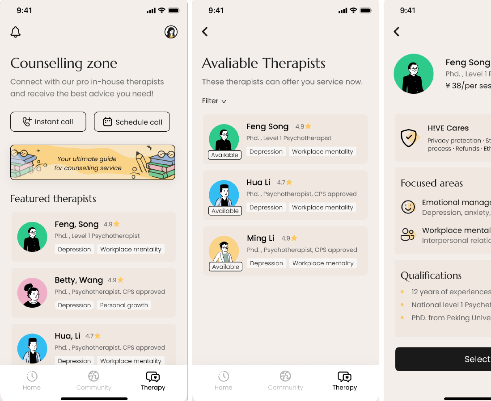
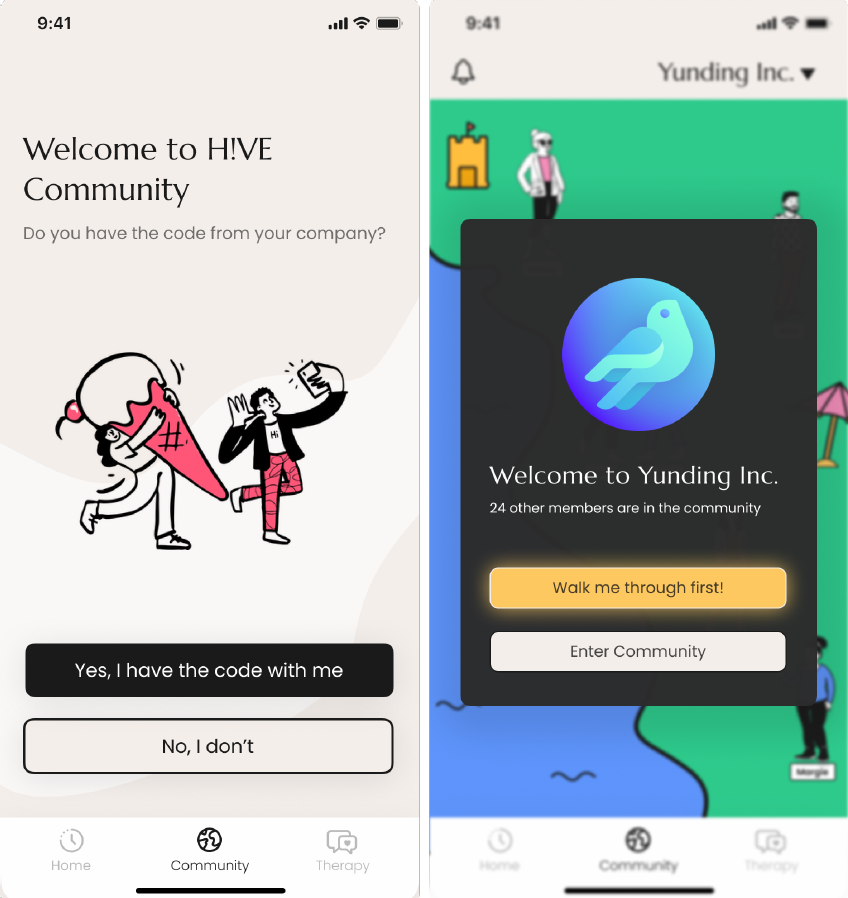
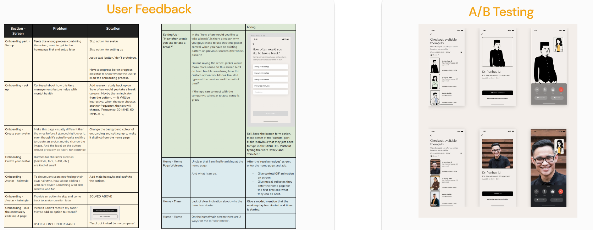
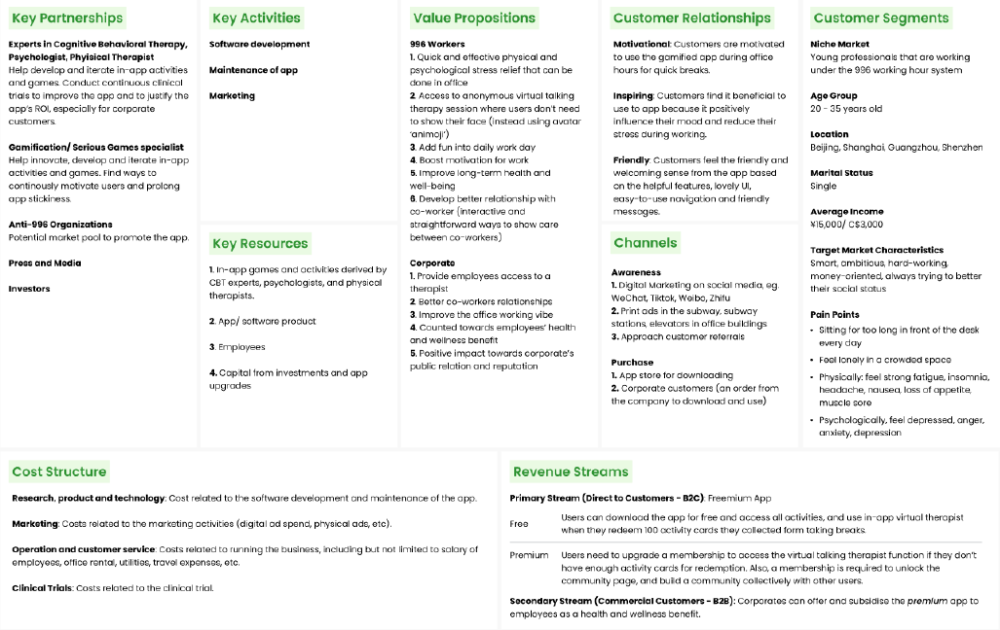

01. Problem Space & Market Research
H!VE is a supportive platform designed to address mental health and social connection needs for employees facing heavy work demands. Through interactive features and access to professional counseling, the platform aims to improve overall well-being and foster a balanced work-life environment.
China's aggressive "996" work culture mandates employees to work from 9:00 AM to 9:00 PM, 6 days a week (72 hours/week, far exceeding the legal limit of 44 hours/week). This culture creates severe physical and psychological strain:
- 80% of white-collar workers in China regularly work uncompensated overtime.
- 70% of young employees aged 18-25 experience varying degrees of anxiety.
- Key Pain Points: Lack of exercise due to fatigue, social isolation from family/friends, and a lack of mental health support in productivity-driven workplaces.

02. Design Iterations
To deliver a cohesive experience, the product went through three major design iterations based on user feedback:
- Iteration #1: Focused heavily on Avatar creation, but users struggled to grasp the full product vision.
- Iteration #2: Covered the 3 main core sections, but users felt a disconnect between the features.
- Iteration #3 (Final): Established stronger cohesion among all three primary features while settling business details.

03. Core Features
H!VE balances individual mental therapy with workplace social connection:


04. User Feedback & A/B Testing
We logged all qualitative feedback in a centralized matrix to track inputs and prioritize UI/UX improvements. To optimize the counseling experience, we conducted A/B Testing to validate call interface designs—specifically testing whether using an avatar mask for therapists improved patient comfort during therapy sessions.

05. Business Model Alignment & Reflection
Throughout the project, we utilized the Business Model Canvas to ensure alignment between employee wellness and corporate objectives. By offering both a direct B2C premium model and B2B corporate wellness packages, H!VE creates a sustainable product that drives both individual well-being and organizational value.
